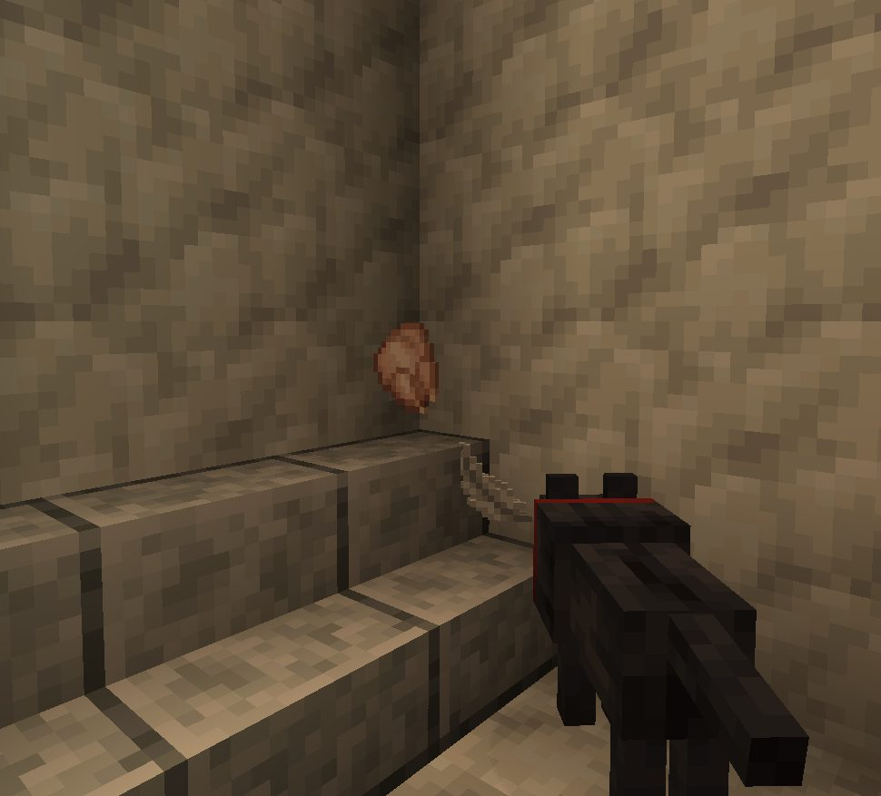
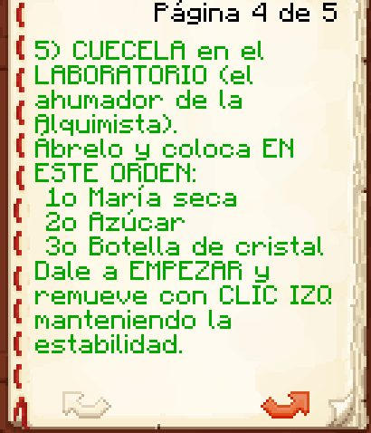

Boletín Oficial del Ayuntamiento del Reino · Se informa, no se alarma
EL HERALDO DEL REINO
Número 1031 de agosto de 2026Noche del lunes 31 de agosto a la mañana del martes 1 de septiembre
COBRÓ POR LEVANTAR LA CASA QUE OTROS DERRIBARON POR FEA, Y LE PUSIERON UN NUEVE SOBRE SESENTA
La Unión Pueblerina arrasó una vivienda entera por cáncer visual, descubrió que ninguno de sus miembros sabía levantar otra y acabó pagándole al Ministro Pan para que la hiciera él. El Ministerio lo ha contado por escrito, con la palabra «cientos», y ha anunciado que la próxima vez cobra el doble. Un vecino le puntuó el resultado con el mismo baremo de seis apartados con el que el Ministro se había puesto un cincuenta sobre cincuenta la noche anterior: le salió un nueve.
Redactado por la Oficina de Prensa del Ayuntamiento
PORTADA
La casa que derribaron por fea ya está en pie, y la ha pagado quien la derribó
El cartel es el mismo de la otra noche y le han cambiado una palabra: donde decía SERÁ REMODELADA ahora dice FUE REMODELADA. Es la única obra del Reino que se ha documentado a sí misma en dos tiempos verbales, y sigue sin licencia en los dos.
Archivo Municipal · pase el ratón para revelarla
El lunes por la noche, cuarenta y un minutos después de que se cumpliera la única
sanción de convivencia que ha impuesto este Reino, la vivienda del sancionado había
desaparecido y en su sitio había dos carteles firmados por la Unión Pueblerina.
Esta Oficina lo contó en el número anterior y dejó el asunto donde estaba: sin autor
conocido, sin licencia y con los arcones del propietario en pie, alineados y sin forzar.
A las 21:59 de esa misma noche —tres horas y media después del derribo— el
asunto se resolvió solo, porque lo resolvió el Ministerio de Construcciones, que publicó un
comunicado que nadie le había pedido. Se reproduce entero, que es lo que hay que hacer con
estas cosas:
«Cuando decidáis actuar “por el bien común” y derruir una casa fea, aseguraos
primero de que alguno de vuestros integrantes sepa construir. Os ahorraréis, por ejemplo,
los cientos de cacahuates que tuvisteis que pagarme para que os hiciera la casa yo.
Como gran arquitecto condecorado que soy, pude levantar una vivienda digna donde antes
solo había ruina. La próxima vez, eso sí, cobraré el doble. Que quede
constancia.» — Ministerio de Construcciones del Reino, 21:59
Queda constancia. Y quedan, de paso, tres cosas que este periódico no había podido
establecer y que ahora constan por escrito y de puño del interesado: que la Unión
Pueblerina existe y tiene integrantes; que ninguno de ellos sabe construir,
cosa que descubrieron después de derribar la casa y no antes; y que el asunto se ha
cerrado con una factura, que es el único documento que ha generado el expediente.
El Ministerio no aclara, y este periódico tampoco se lo pregunta, cómo llegó a él el
encargo. Sí consta que a las 19:17, tres cuartos de hora después del hallazgo, el
Ministerio ya había dicho: «ya me han contactado, la están remodelando». Este
Ayuntamiento sigue sin reconocer a la Unión Pueblerina, sigue sin reconocerle
potestad para retirar inmuebles ajenos, y hace constar por segunda vez que le coge el
teléfono igual.
A las 22:07, Mazitrvrs —que fue quien había levantado la casa original,
y que ya dejó dicho para el número anterior aquello de «por suerte me pagó de
antemano»— formuló la pregunta que estaba en el aire: «supongo que no entra en
los siguientes concursos de viviendas». La respuesta del Ministerio, a las 22:08,
consta en dos frases y se transcribe sin comentario:
«Puede entrar, solo que como la hice yo, si se presenta y gana, gano yo.
Así es la ley.»
Esta Oficina ha revisado la ley. La ley no dice eso. La ley, a efectos prácticos, no
dice nada, porque el gobierno en funciones tampoco se ha pronunciado sobre esto.
URBANISMO
Un vecino le aplicó su propio baremo y le salió un nueve sobre sesenta
Ocho minutos después de que el Ministerio publicase el comunicado, ArsarFurro
hizo lo único que se podía hacer con él: puntuar la obra con el impreso del propio
Ministerio, los seis apartados en su orden y sobre diez cada uno. El resultado se
publica íntegro porque es un documento municipal, aunque no lo firme ningún funcionario:
Fachada1
Interior0
Utilidad2
Encaje con el Reino3
Originalidad2
Votación popular1
TOTAL9 sobre 60
La noche anterior, con ese mismo impreso y en esos mismos seis apartados, el Ministerio
se había otorgado a sí mismo un diez en los cinco que puntuaba él, o sea cincuenta
sobre cincuenta, y el vecindario le había puesto un 2,3 en el sexto. Ahora el
vecindario le pone un 1 y le baja los otros cinco. Este Negociado hace constar, sin
subrayarlo, que la variación entre las dos mediciones es de cuarenta y tres puntos y
que en las dos participaba el mismo evaluador principal.
Nueve sobre sesenta es, además, la nota más baja registrada en la historia de este
Reino: queda por debajo del 13,2 que sacó el propio ArsarFurro en el concurso, por
debajo del 3,8 de Mariowo_ y por debajo —esto conviene leerlo dos veces— del 3,6 que
sacó un solar en el que no había nada construido.
El Ministerio contestó a las 22:17. La respuesta consta de tres palabras, va
dirigida a la madre del evaluador y esta Oficina ha resuelto no reproducirla, no por
pudor sino porque la reproducción exigiría abrir un epígrafe nuevo. El evaluador respondió
con una carcajada por escrito de veinte caracteres, de lo que este Negociado deduce que
el procedimiento contradictorio quedó agotado en ese punto.
Calificación de esta Oficina: OBRA EJECUTADA, IMPUTADA A TERCEROS Y
COBRADA POR ADELANTADO. NO ES UNA CASA, ES UNA FACTURA CON TEJADO.
URBANISMO
Expediente 0065 — «La torre del alquimista», que es provisional desde hace tres jornadas
Al norte del Reino, SerSM15 ha levantado una dependencia sobre la que informó a
su vecino LetayReaver a las 21:21 con una frase que esta Oficina considera el
resumen más honrado que ha recibido nunca de una obra: «la hice re provisional por el
frío». Se hace constar que el frío entró hace cuarenta y siete días y que quedan
cuarenta para que se vaya.
La finalidad declarada varía según a quién se le pregunte y en qué minuto. A las 21:22
el propietario del solar corrigió al constructor: «aquí va a ser sala de encantamiento
y pociones», y a continuación, en el mismo aliento, «te había dicho que iba a ser
la torre del alquimista». Ambos usos figuran ya rotulados en carteles dentro de la
dependencia, carteles que el propietario invitó a leer —«solo revisa la sala, lee
los carteles, ya te dije»— y que el constructor reconoció no haber leído.
Consta igualmente un arcón en el interior sobre cuyo contenido esta Oficina ha
renunciado a informar, después de que el constructor lo describiera como «unos bloques
adentro», calificara el resto de la existencia con una palabra que no se transcribe y
añadiera, al ser preguntado por su procedencia: «no preguntes de dónde vino. Guiño
guiño». El Negociado de Obras no ha preguntado.
Se une al expediente una solicitud verbal presentada esa misma noche al
Ministerio, con este tenor literal: «Pan, ¿no puedes hacer que el piso de Manolete sea
césped? Que yo pensé que se iba a hacer césped». La solicitud fue agradecida antes de
ser tramitada, que es el orden habitual en este Reino.
Calificación: PROVISIONAL, COMO TODO LO QUE DURA. Se requiere al
solicitante para que aclare si la dependencia es sala de pociones o torre de alquimista, a
sabiendas de que la respuesta será que las dos.
ANOMALÍAS
Ocho de las veinticuatro defunciones las firma la misma criatura, y sigue sin expediente
La Bicha del granero vuelve a encabezar el registro de defunciones de la jornada
con ocho de veinticuatro, o sea una de cada tres. Es la sexta jornada
consecutiva al frente. Se llevó a NARUMl a las 22:37, a Cliqueame a las 22:53
y a las 05:45, a GabbyQuill635 a las 23:07 y a la 01:53, a Mazitrvrs a las
03:57, a Sarketo1 a las 04:40 —en su primera noche en el Reino— y a
Gaaraham03 a las 09:22.
A las 22:37, la vecina NARUMl presentó en la plaza una alegación técnica que esta
Oficina traslada tal cual porque no sabe qué hacer con ella:
«Le pegaba y no le hacía daño. Tengo testigo.» — NARUMl, 22:37, dos minutos después de la primera defunción de la
noche
Que haya testigo es, a juicio de este Negociado, lo más grave del asunto: una
alegación sin testigo se archiva, y con testigo hay que leerla. Se ha leído. En el mismo
minuto, el Ministerio hacía en la plaza el único comentario oficial que consta sobre la
criatura desde que existe: «la bicha del granero atacando de nuevo».
Este Ayuntamiento recuerda que a la criatura se le aplicó una medida correctora
hace seis jornadas y que la medida funcionó: se pasó de cuarenta y cuatro defunciones a
veinte. Recuerda también que la campaña de control se llama Plan Integral de Saneamiento
del Subsuelo Habitado, que ese nombre se aprobó, y que no ha sido dotado de efectivos,
de calendario ni de presupuesto, por lo que a día de hoy el Plan consiste enteramente en su
nombre. Con los conejos hubo ocho batidas y fotografía. Con ésta van seis jornadas y
un rótulo.
ANOMALÍAS
Cuatro Matriarcas a la vez bajo el Reino, y el vecino que las midió las encontró flojas
Cuatro rótulos morados en la misma galería, a las 07:52. Obsérvese el termómetro: 6 °C bajo tierra, seis grados por encima del techo que este Ayuntamiento tiene publicado para la estación. La explicación oficial es que estaba bajo tierra.
Archivo Municipal · pase el ratón para revelarla
A las 07:52, TitanWarhamerr remitió a esta Oficina una imagen tomada en
una galería inundada en la que se cuentan cuatro ejemplares de Matriarca a la vez, y
la acompañó de la única valoración técnica recibida sobre el asunto:
«Re chafa la matriarca, terrible chichón de piso.»
Este Negociado ha consultado el expediente [las luces del cielo], abierto hace
ocho jornadas cuando dos vecinos vieron luces sobre el Reino y un tercero bromeó con que
eran forasteras. Sigue sin constar ninguna Matriarca en el padrón, ninguna ha
solicitado permiso de sobrevuelo y ninguna ha respondido a los requerimientos. Que ahora
sean cuatro y estén bajo tierra en lugar de encima de ella no altera el expediente,
que es de padrón y no de altura.
Sí consta, y esta Oficina lo hace notar con la satisfacción del que archiva bien, que
el vecino que las fotografió sobrevivió a las cuatro y que su queja no es que fueran
peligrosas: es que no lo fueran bastante. Se traslada al Negociado de Fauna, que no
existe.
SOCIEDAD
Dos altas en una jornada, y las dos las tramitó el vecindario por su cuenta
El Reino ganó anoche dos vecinos: Sarketo1 a las 23:07 y kum4shiro
a las 10:14. Ninguna de las dos altas la gestionó esta administración, que a esas horas
tenía la ventanilla donde suele tenerla.
Del primero da cuenta el pliego de luto de este mismo número. Del segundo hay que decir
que llegó a las diez y cuarto de la mañana, que llegó de lejos y que se encontró con un
Reino de cuatro vecinos despiertos, dos de los cuales dejaron lo que estaban
haciendo. _Cafecito_ le explicó, en este orden y sin que se lo preguntara nadie: que
hay que seguir la brújula del recorrido de bienvenida y por qué; que puede levantar su casa
donde quiera salvo donde no; que aquí hay estaciones, que ahora es invierno, que por
eso hay nieve y que «si hace mucho frío te congelas: la ropa de cuero protege del
frío»; y que en verano pasa lo contrario. El recién llegado había preguntado dónde se
cogen troncos.
Después le explicó el zurrón —«una mochila especial para guardar los objetos de
encargo, ya que no te los podés sacar del inventario»—, le explicó que la elección de
oficio viene después, le explicó que se protege un arcón poniéndole un cartel con la mano
derecha y le explicó, por último, que a esa hora hay poca gente y que más tarde se
llena. La instrucción completa duró quince minutos y la firma una vecina que a
las 04:49 de esa misma madrugada había dicho en la plaza:
«Acabo de mandar más invitaciones para el Reino. Ya debería cobrar por ser
la publicista.»
Esta Oficina ha estudiado la reclamación y comunica que no existe la plaza, que
no está dotada y que, en caso de crearse, correspondería resolverla al gobierno en
funciones. Mientras tanto, y a falta de retribución, se le hace constar en acta que anoche
hizo el trabajo de cuatro negociados: bienvenida, información, meteorología y
vivienda.
Relevó en el turno nikito338800, que a las 12:16 se hizo cargo del recién llegado
y le expuso los cinco oficios del Reino en siete frases, con criterio de combate y
sin adjetivos: el Loco para pelear de cerca, el Funcionario como tanque, el Abuelo para el
arco, el Yogur para sanar y el Parrillero para el fuego a media distancia. Le regaló una
armadura, le forjó una espada y le anunció que se ausentaba: «bajo a desayunar».
Volvió a la 13:01, cuando el otro ya no estaba.
SUCESOS
Explotó el laboratorio de la Alquimista, y el vecino tenía el impreso en la mano

El interior del laboratorio después de la deflagración. En el centro de la imagen, lo que el denunciante describió como «una víctima resultante de la explosión». Esta Oficina no ha podido determinar de quién era.
Archivo Municipal · pase el ratón para revelarla
A las 08:51, Cliqueame comunicó a esta administración que el laboratorio
de la Alquimista había volado por los aires mientras él seguía el impreso, y lo formuló con
una precisión que conviene subrayar porque es la clave del asunto:
«Cocí la marihuanita en el orden que decía el instructivo y explotó
igualmente mi laboratorio.»
Adjuntó dos fotografías: una de la sala y otra de lo que llamó «una víctima
resultante de la explosión», extremo que este Negociado hace constar sin poder
confirmarlo ni desmentirlo.
La contestación del Ministerio, a las 08:52, aclaró el fondo del asunto y abrió otro:
«si haces mal la secuencia de botones también explota». A las 09:12, el
denunciante formuló la única pregunta que cabía formular —«a que salían botones
igual»—, y a las 09:13 el Ministerio confirmó que salen.
Esta Oficina ha cotejado el impreso. El impreso dice el orden: primero la hierba
seca, después el azúcar, después el frasco de cristal. Y luego dice, palabra por palabra,
que se dé a empezar y «se remueva manteniendo la estabilidad». Lo que el impreso no
dice en ninguna de sus cinco páginas es qué botones ni cuándo, que es
exactamente lo que hace explotar el edificio. El vecino hizo bien las tres cosas que el
papel explica y perdió la sala por la cuarta, que no viene.
Se ha requerido a la Imprenta Municipal una sexta página. La Imprenta ha
contestado que el impreso tiene cinco.
SUCESOS
Desapareció un burro con nombre, cofre y expediente, y apareció sesenta segundos después
A las 11:23, _Cafecito_ presentó denuncia por la desaparición de un burro
de su propiedad, y lo hizo con todos los datos que este Ayuntamiento reclama siempre y no
le dan nunca: que llevaba cofre puesto, que llevaba nombre y que el nombre
era _Capuchino_. Añadió las tres hipótesis que manejaba, en su orden: «no sé qué
le pasó, si lo secuestraron, o lo desvivieron, o se fue al cielo».
A las 11:24, la denunciante amplió la denuncia para retirarla: el animal había
aparecido, lo había recogido una vecina y estaba a resguardo junto a su armadillo
Eustaquio, que es el vecino no humano de este Reino con ficha propia desde el número
siete.
El expediente 0066 se abre y se cierra en el mismo minuto, lo que lo convierte en
el más rápido de la historia de esta administración. Esta Oficina hace constar la
marca con orgullo y hace constar también, por rigor, que no intervino en ninguno de los dos
trámites.
SERVICIOS
El parte del pulso: la fragua volvió a cobrar sin reparar, y esta vez la culpa era del arreglo anterior
Cuatro avisos seguidos y, en medio, el desenlace: «No tienes suficiente dinero para comprar Reparar la pieza que llevas. Precio: 20 Cacahuates.» El vecino no se quedó sin arreglo: se quedó sin arreglo y sin dinero para volver a intentarlo.
Archivo Municipal · pase el ratón para revelarla
Relación de medidas correctoras adoptadas desde el número anterior. Como es
costumbre, ninguna reviste gravedad y todas estaban previstas. Este número trae, además,
una que corrige a otra de esta misma sección, cosa que no había pasado nunca.
La fragua volvió a cobrar veinte y a no reparar nada. El número anterior anunció
que el asunto quedaba resuelto. No lo quedaba. Y lo peor no es que siguiera roto: es que
lo rompió el propio arreglo. La orden que la fragua manda al taller se escribió con
un hueco donde debía ir el nombre del vecino, y el hueco nunca se rellenó: al taller
le llegaba literalmente la palabra «hueco». El taller buscaba entonces a un vecino llamado
así, no lo encontraba —porque no existe— y contestaba a la pared. Resultado: el
vecino pagaba sus veinte Cacahuates, la ventanilla se cerraba y no veía absolutamente nada.
Ni el arreglo ni el error. Cobrando y sin entregar, en silencio, durante dos
jornadas.
Lo denunciaron cuatro vecinos en una sola noche, y los cuatro por escrito:
Agustin.F a las 21:10 —«quise reparar el casco, me comió las 20 y no lo reparó»,
con dos fotografías—; GabbyQuill635 a las 00:25, con la cifra hecha:
«no puedo reparar y me consume los 20 Cacahuates, ya me robó como 80»;
Nico a la 01:29 por un pico; y Mazitrvrs a las 03:13 por una espada,
«me consumió los Cacahuates pero no la reparó». Cuatro personas, cuatro piezas
distintas y el mismo desenlace. Corregido a las 10:13 de esta mañana.
Y al barrer el registro buscando el mismo hueco mal escrito aparecieron otras dos
ventanillas con el defecto idéntico, y una de ellas llevaba cincuenta y cuatro
atenciones así: la venta de tabaco, en la que la frase de Yaniko y su ronroneo no
llegaron a oírse ni una sola vez; y la ventanilla de Fichas, que entrega llaves de
arcón. Las tres corregidas. Este Ayuntamiento hace constar, por primera vez en diez
números, que la queja de los vecinos ha descubierto dos averías que nadie había
denunciado, y que las descubrió porque alguien se molestó en mirar si el mismo error
estaba en otro sitio.
El impreso mandaba al sur y el sitio está al norte. Lo dijo Mazitrvrs a
las 20:09, en la primera denuncia de la jornada y con el subrayado incluido:
«la valija del sur nos dice que hay que ir a la villa para entregar una bolsa; hago
énfasis en que dice que hay que ir muy al sur, y la villa queda al norte». Tenía
razón. La contestación oficial del Ministerio fue una risa de doce caracteres, y esta
Oficina la considera una aceptación de los hechos.
Y en un solo párrafo, porque ninguna reviste gravedad: las ordenanzas de la plaza no
se estaban aplicando, y no desde ayer —llevaban así desde antes de que existiera este
Reino—, de modo que la lista de lo que un vecino puede pedir a gritos en la plaza era
decorativa: ya no lo es · se han tapado las paredes del subsuelo, que en los
dieciocho parajes del Reino llevaban siendo transparentes para quien supiera mirarlas ·
la Bolsa ya no espera a nadie para abrir · el Centro de Reconsideración ya no
adivina cuándo termina una sanción: lo mira · se ha dado de alta al sheriff con
cuatro encargos, y este Ayuntamiento hace constar que el sheriff niega que en el Reino
haya delitos · se ha abierto el Puesto de la Semillera, donde el albarán se paga
en la ventanilla y se canjea en el palé, y se ha inaugurado la expedición de las Siete
Piedras, que consiste en bajar al Abismo, coger una piedra de cada sitio y volver
entero, siendo lo tercero lo difícil.
Quedan ocho encargos nuevos abiertos en el Reino desde el cierre técnico de esta
tarde. Se relacionarán en el próximo número, que es cuando el vecindario habrá tenido
ocasión de romperlos.
ADMINISTRACIÓN
Este Heraldo cierra ahora a la una, y lo cuenta porque se le nota

La página cuarta de las cinco del impreso del laboratorio. Dice el orden, dice que se remueva «manteniendo la estabilidad» y no dice ni una palabra de los botones. El vecino que voló su sala la tenía delante.
Archivo Municipal · pase el ratón para revelarla
A partir de este número, la jornada del Heraldo termina a la una de la tarde y no
a las ocho. El motivo es sencillo y esta Oficina lo publica porque prefiere que se lo lean
a que se lo noten: con el horario anterior cabían dos noches en un mismo número, y
lo que pasaba de madrugada —que es cuando pasa todo— llegaba al vecindario con hasta
veintitrés horas encima. Se ha contado hora por hora lo ocurrido en los nueve números
anteriores: el Reino tiene su hora más vacía a mediodía y a las dos ya ha vuelto la
tarde. La una es el corte, y no es una opinión de esta Oficina: es una cuenta.
Este número es la bisagra y por eso abarca diecisiete horas en vez de veinticuatro.
De ahí una discrepancia que esta Oficina prefiere publicar antes que disimular: el
Heraldo anota 24 defunciones y 19 vecinos, y el escalafón anota 26 y 20. No
se contradicen: es que el escalafón sigue cerrando a las ocho y el Heraldo ya cierra
a la una, de modo que hay dos vecinos y dos defunciones que este número no ha vivido y el
otro negociado sí. Se corregirá el lunes, cuando el escalafón vuelva a salir.
En el mismo capítulo de rectificaciones, y ya que estamos: el número anterior se
reeditó ayer por la mañana con cuatro correcciones y su fe de erratas, y lo
anunció el Emperador antes que esta Oficina, cosa que consta en el pliego de oro de este
mismo ejemplar. Un periódico que se corrige a sí mismo dos números seguidos podría
considerarse un periódico poco fiable. Este Ayuntamiento sostiene la interpretación
contraria y no piensa desarrollarla.
ADMINISTRACIÓN
Fátima cumple nueve jornadas sin acudir a su puesto
Sin novedad. El expediente sigue abierto, nadie la ha visto y esta Oficina ya no tiene
nada que añadir a lo que no añadió en los ocho números anteriores.
Se hace constar, eso sí, que anoche el censo de entrada tampoco funcionaba, y que
esta vez el asunto no era del Reino sino de la oficina de registro común, que estuvo
fallando en todas partes a la vez. Un vecino se pasó la mañana entera intentando
inscribirse sin conseguirlo, y a mediodía seguía sin poder. Es la primera vez que este
Ayuntamiento puede informar de una avería del censo sin ser el responsable, y desea
dejar claro que la circunstancia le resulta agradable.
Edición imperial · Pliego de Oro · se imprime aparte
LO QUE DICE EL EMPERADOR
Exégesis oficial de las palabras de Su Majestad
Quinta entrega. Jornada de tres intervenciones, todas ellas en horas en que este Reino estaba casi vacío, y las tres —hágase notar— para dar una mala noticia sin que nadie se la hubiera pedido. Este Negociado considera que ahí está el hallazgo del día y lo desarrolla abajo con la extensión que merece, que es mucha.
Se ha actualizado el Heraldo de ayer, que tenía fallos.
— S. M. el Emperador Duke, a las 09:58
Lo que estaba pasando Dicho sin que nadie hubiera protestado, doce horas después de repartirse el número anterior y mientras el Reino tenía a cuatro vecinos dentro, dos de ellos ayudando a un recién llegado a darse de alta.
Lectura oficial Adviértase el orden de la frase: primero la enmienda y después el motivo, que es justo al revés de como lo cuenta esta Oficina, que siempre empieza explicándose. Su Majestad no dice «se detectaron cuatro imprecisiones», ni «tras el oportuno estudio»: dice que tenía fallos y se va. Este Negociado ha estudiado la posibilidad de adoptar esa economía y ha resuelto que no está a su alcance, por razones de plantilla.
★ ★ ★
Hay un error gordo…
— S. M. el Emperador Duke, a las 12:24
Lo que estaba pasando Sobre el censo de entrada, que aquella mañana llevaba horas sin admitir la inscripción de un vecino nuevo. El asunto no era del Reino: la oficina de registro de la que dependen todos los censos de todos los reinos estaba fallando en todas partes a la vez.
Lectura oficial Dos palabras, un adjetivo y unos puntos suspensivos que el Emperador dejó puestos y esta Oficina reproduce sin tocar. Obsérvese que Su Majestad elige la palabra más pequeña que existe —«gordo»— para el suceso administrativo más grande de la jornada, que afectaba a reinos que ni siquiera nos constan. Es, a juicio de este Negociado, la única forma de dar una noticia de esa magnitud sin alarmar a nadie, y funcionó: no se alarmó absolutamente nadie.
★ ★ ★
Solo informo, que no tiene por qué no ir.
— S. M. el Emperador Duke, a las 12:25
Lo que estaba pasando Un minuto después de lo anterior, y dirigido al vecindario que ya estaba dentro y que no tenía ningún problema.
Lectura oficial Aquí Su Majestad hace algo que este Ayuntamiento no ha conseguido en diez números: anunciar una avería y desanimar a la gente de que le afecte, todo en la misma frase y con una doble negación que, sometida a estudio por este Negociado, resulta gramaticalmente impecable. Se ordena su fijación en el tablón de la plaza junto al aviso de la fuente, que lleva cuatro jornadas diciendo lo contrario con el triple de palabras.
★ ★ ★
Oficina de Prensa · Negociado de Exégesis Imperial
Necrológicas · Registro Civil del Reino
LA ESQUELA
El Ayuntamiento del Reino participa las defunciones de la jornada que a su juicio merecen constar, y ruega una oración por quienes ya han vuelto.
LA ESQUELA
nikito338800
Que entregó su vida a las 10:29 del martes, en una galería honda, a manos de
eso que hay ahí abajo y que este Ayuntamiento lleva nueve jornadas sin nombrar
porque no consta en el padrón, no ha declarado actividad y no responde a los
requerimientos.
Fue el vecino que más encargos cerró de toda la jornada —diez— y el que más
preguntó, y bajó allí sin la herramienta que hacía falta. Sus palabras, tres segundos
después de volver, fueron:
«No tenía pico.»
Esta Oficina hace constar además que fue la segunda vez que este vecino
abandonó la jornada, y que la primera —a las 22:24, en un río de fuego— la explicó él
mismo con una franqueza que no se le pedía: «lo sé, me suicidé para volver». Se
inscribe como desplazamiento administrativo y no como defunción, a instancia del
interesado y contra el criterio del Registro.
Ruegan una oración los ocho vecinos que estaban dentro y ninguno de los
cuales bajó a buscarle.
LA ESQUELA
GabbyQuill635, seis veces
Que volvió seis veces en una sola noche, más que nadie, y las seis entre las
22:24 y las 02:19: dos ante la Bicha del granero, una ante una Araña Alien
Cazadora, una ante El Ratero y dos por su propio pie, desde alturas
que este Registro no ha podido establecer y que la interesada no ha querido detallar.
Había entrado a las 20:33 preguntando dónde se consiguen fragmentos de amatista, y
recibió unas cuantas de Mazitrvrs sin llegar a enterarse —«te tiré algunas amatistas
mientras estabas quieta»—. A la 01:38 hizo pública la pérdida de su caballo, por
segunda jornada consecutiva, con estas palabras y en este orden: «volví a perder mi
caballo» y, a continuación, una sola letra repetida ocho veces.
Aun así cerró seis encargos, que son los mismos que sus defunciones. Este
Negociado ha comprobado el dato dos veces por lo bonito que queda y hace constar que es
casualidad.
La familia agradece las condolencias y ruega que, si alguien ve el caballo,
no lo devuelva al Ayuntamiento: que se lo devuelva a ella.
LA ESQUELA
Sarketo1, en su primera noche
Que se dio de alta en el Reino a las 23:07 del lunes, traído por NARUMl,
que lo presentó en la plaza con estas palabras: «ya traje a mi pequeño Titán, ahora
traje a mi pequeño Sarketo. Me lo cuidan, porfa». Y que a las 04:40, cinco
horas y media después, entregó su vida ante la Bicha del granero, con lo que se convierte
en el vecino más nuevo del Reino en constar en este pliego.
Consta que fue recibido por el Ministerio con una recomendación de salubridad
—«Sarketo, bebe lejía, está rica»— y que la persona que lo había traído formuló
en el acto la única objeción de la noche: «no me lo degeneres, Pan». La respuesta
del Ministerio queda incorporada al expediente: «no prometo nada».
Cerró tres encargos antes de las cinco de la mañana. Este Ayuntamiento le da la
bienvenida y le comunica que ya ha cumplido el requisito principal para ser del Reino.
Se hace constar que el difunto goza de buena salud.
Oficina de Prensa · Negociado de Registro Civil y Defunciones
El parte de la jornada
Duración de la jornada
16 h 44 min, de las 20:04 a las 12:48 — la primera que cierra a la una
Vecinos en el Reino
19 (el escalafón anota 20: sigue cerrando a las ocho)
Altas tramitadas
2 — Sarketo1 a las 23:07 y kum4shiro a las 10:14
Altas tramitadas por esta administración
0
Máxima concurrencia
8 a la vez, a las 04:48
Defunciones
24 (el escalafón anota 26, por lo mismo)
Vecina con más defunciones
GabbyQuill635, 6
Defunciones suyas por su propio pie
2, desde altura
Primera causa de muerte
la Bicha del granero, 8 — sexta jornada al frente
Proporción de defunciones que firma
una de cada tres
Alegaciones técnicas presentadas contra ella
1, con testigo
Efectivos del Plan Integral de Saneamiento del Subsuelo Habitado
0
Partes del Plan que existen
1 — el nombre
Defunciones de vecinos con menos de seis horas de antigüedad
1
Encargos del Reino cerrados
63 (eran 65)
Vecino con más encargos
nikito338800, 10 — y también el que más preguntó
Encargos cerrados por el recién llegado de anoche
3, antes de las cinco de la mañana
Frases dichas en la plaza
523
Viviendas derribadas por fea y vueltas a levantar
1
Asociaciones vecinales capaces de levantar una casa
0, según ellas mismas
Cacahuates que costó la reconstrucción
«cientos», sin desglosar
Anuncio del Ministerio sobre la próxima
«cobraré el doble»
Puntuación que el Ministerio se dio a sí mismo el lunes
50 sobre 50 en lo que puntuaba él
Puntuación que le dio un vecino el martes
9 sobre 60
Nota más baja registrada antes de ésta
3,8
Nota de un solar sin nada construido
3,6 — más alta que la de anoche
Palabras de la respuesta oficial a esa puntuación
3, no reproducibles
Expedientes abiertos y cerrados en el mismo minuto
1 — el del burro _Capuchino_
Laboratorios volados siguiendo el impreso
1
Páginas que tiene ese impreso
5
Páginas que explican los botones
0
Denuncias por la fragua en una sola noche
4
Piezas reparadas en esas cuatro
0
Jornadas que la fragua llevaba cobrando sin entregar
2
Ventanillas más con la misma avería
2, ninguna denunciada
Atenciones mudas de la venta de tabaco
54
Medidas correctoras adoptadas
14
Encargos nuevos abiertos esta tarde
8
Impresos que mandan al sur pudiendo ir al norte
1
Parajes del Reino con las paredes del subsuelo tapadas
18
Matriarcas contadas a la vez bajo tierra
4
Matriarcas inscritas en el padrón
0
Valoración recibida sobre ellas
«re chafa»
Números del Heraldo corregidos después de publicarse
2 seguidos
Intervenciones del Emperador
3, las tres para dar una mala noticia
Jornadas que Fátima lleva sin acudir a su puesto
9
Lagomorfos avistados
0 (van 9 jornadas)
Aviso oficial
El Ayuntamiento del Reino informa de que la vivienda derribada el pasado lunes ha sido
repuesta, y hace constar que la reposición se ha ejecutado con la misma diligencia con
que se ejecutó el derribo: sin licencia, sin comunicación previa y sin que esta
corporación se enterase hasta que salió publicado. Esta administración sigue sin
reconocer a la Unión Pueblerina, sigue sin reconocerle potestad para retirar inmuebles
ajenos y añade hoy que tampoco le reconoce potestad para reponerlos, lo que deja el
solar en una situación jurídica que este Ayuntamiento describe como «casa».
Sobre la facturación de la obra al Ministerio de Construcciones, esta corporación
no ha recibido queja alguna y no la espera: quien pagó lo hizo por su voluntad y quien
cobró lo ha publicado él mismo, con la palabra «cientos» y con el anuncio de que la
próxima vez cobrará el doble. Se recuerda al vecindario que el Ministerio no tiene
tarifas publicadas, y que ésa es precisamente la razón por la que puede duplicarlas.
Queda incorporado al expediente, que ya son nueve, todos a la espera de que se pronuncie
el gobierno en funciones.
En cuanto a la fragua, este Ayuntamiento pide disculpas sin matizarlas. Cuatro
vecinos pagaron por un servicio que no recibieron, uno de ellos cuatro veces, y lo
denunciaron los cuatro por escrito y con fotografía mientras esta Oficina publicaba que el
asunto estaba resuelto. Estaba resuelto en el papel. Se ha corregido esta mañana, se han
encontrado de paso dos averías más que nadie había visto, y se hace constar que las
tres se descubrieron porque el vecindario insistió. Insistan.
Por último, esta Oficina saluda a los dos vecinos dados de alta anoche y les comunica
que ninguno de los dos trámites lo hizo esta administración: los hicieron dos vecinas y un
vecino, por su cuenta, a las once de la noche y a las diez de la mañana, explicando el
invierno, la ropa de cuero, los cinco oficios y dónde se cogen los troncos. A uno de ellos se
le recibió además con una recomendación de salubridad del Ministerio que esta corporación
desaconseja seguir. El Reino los tenía a los dos dentro antes del amanecer, y a uno de
los dos lo tuvo dentro cinco horas y media exactas.